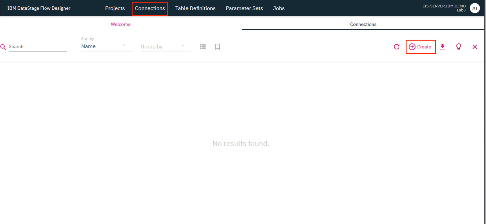
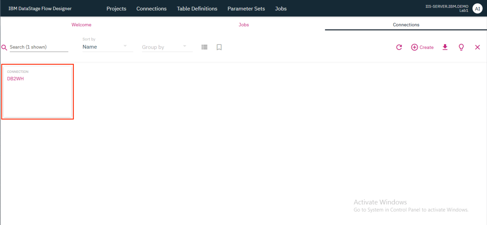
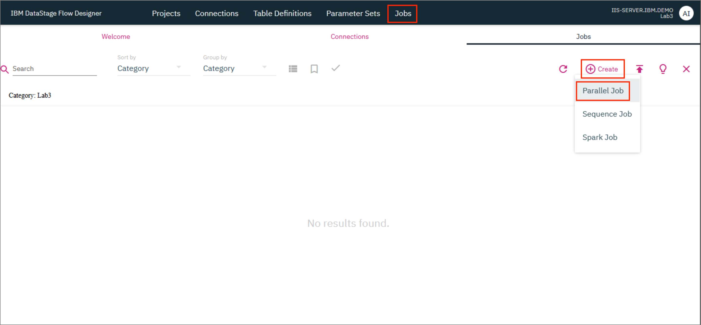
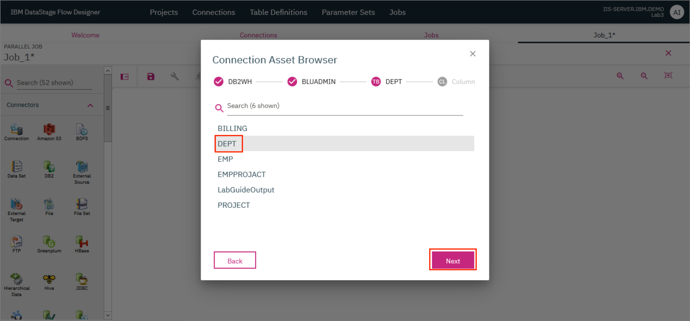
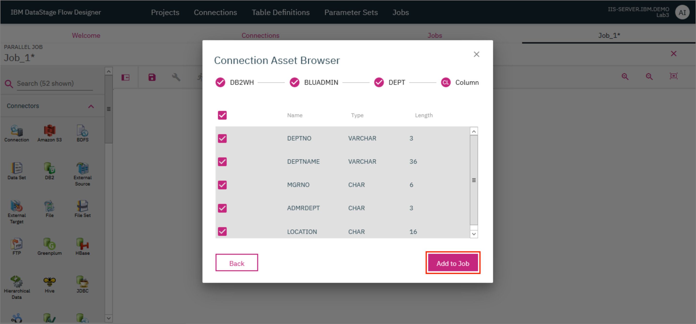

Lab: Analyze data across data sets¶
Information Server enables users to better understand their data. It uses pre-built and custom rules that will apply meaning and quality measurements, which are available for users of the data and interested parties.
DataStage Flow Designer enables users to create, edit, load, and run DataStage jobs which can be used to perform integration of data from various sources in order to glean meaningful and valuable information.
This lab will give you hands-on experience using Information Server's datastage flow designer and rule capabilities. In this lab, you will learn the following:
- How to join two data sets using DataStage Flow Designer to create a single data set
- How to create a data rule that runs on columns from each data set
- Apply the rules to the joined data set
- View data that does not apply to the rule
This lab is comprised of 2 sections. In the first section, we will see how to associate records within 2 data sets to create a single combined data set using DataStage Flow Designer. In the second section, we will apply a data rule on the combined data set and analyze the data that does not apply to the rule.
Note: The merged data set is already available in DB2WH. If you wish to, you may skip section 1 and directly move on to section 2 where you can import this merged data set.
This lab consists of the following steps:
- Create a Transformation project
- Add database connection
- Create the job
- Compile and run the job
- View output
Section 2: Create and run data rule
Section 1: Join the data sets¶
Before you start¶
Before we start the lab, let's switch to the iis-client VM and launch Firefox.

Click on Classic Launchpad in the Bookmarks tab. The first time you try this out, you might see a certificate error. To get past it, click on Advanced... and then click Accept the Risk and Continue.

Click on DataStage Flow Designer.
Login with the credentials isadmin/inf0Xerver.

This brings up the DataStage Flow Designer. Click OK.
1. Create a Transformation project¶
- On the IBM DataStage Flow Designer, click on the
Projectstab and click+ Create. In the modal that opens up, type in a name for the project and clickCreate.

The project takes a few minutes to be created and once ready, it will be visible on the Projects tab.

- Click on the tile for your newly created project. In the modal that opens up, verify that the name of your project is provided as the
Project Nameand clickOKto switch the project.
2. Add database connection¶
The input tables - EMP (containing employee data) and DEPT (containing department data) - are already loaded in Db2 Warehouse. Let's add a Db2 warehouse instance as a Connection in DataStage.
- Click on the
Connectionstab and then click+ Createto add a new connection.

- Provide the following connection details and click
OK. ClickSaveon the new modal that pops up.
Name: DB2WH
Connector type: JDBC
URL: jdbc:db2://db2w-kzwbsid.us-east.db2w.cloud.ibm.com:50001/BLUDB:sslConnection=true;
Username: bluadmin
Password: ****************

A tile for the new connection will now be displayed in the Connections tab.

3. Create the job¶
- Click on the
Jobstab and then click+ Create. ClickParallel Job.

A new tab with the name Job_1* opens up where you can now start designing the parallel job.
The first step is to load the input tables DEPT and EMP into DataStage. The WORKDEPT column of the EMP table is the same as the DEPTNO column of the DEPT table.
- First, drag a Connection connector to the canvas. In the modal that opens up, select the
DB2WHconnection that was created earlier and clickNext.
- On the next screen, select the
BLUADMINschema and clickNext.

- On the next screen, select the
DEPTtable and clickNext.

- On the next screen, click
Add to Job.

- Drag another Connection connector to the canvas and repeat the steps given above but this time, select the
EMPtable instead. Once you complete the steps, you should see the two Connection connectors on the canvas.

The EMP table uses the WORKDEPT column to identify the department number whereas the DEPT table uses the DEPTNO column. Use a Transformer stage to modify the output of the EMP table by changing the name of the WORKDEPT column to DEPTNO. This is needed for a future step where we will Join the two tables.
- Drag and drop a Transformer stage next to the Connection connector for the
EMPtable. Provide the output of theEMPtable Connection connector as the input to the Transformer stage. For this, click on the little blue dot on the right side of the Connection connector and drag the mouse pointer to the Transformer stage.
NOTE: For another method to connect the Connection connector to the Transformation stage, click on the Connection connector to select it, then drag and drop the Transformation stage. The Transformation stage will automatically be connected to the Connection connector.

- Drag and drop a Join stage to the canvas and provide the output of the Transformer stage as the input to this Join stage.

- Double click on the Transformer stage to open up the stage page. Go to the
Outputstab and in the table find the entry for theWORKDEPTcolumn. Double click on theWORKDEPTvalue under theColumn namecolumn and replace the text withDEPTNO. ClickOK.
- Both the tables now have a column called
DEPTNOwhich can be used to join the tables. Provide the output of theDEPTtable Connection connector as the second input to the Join stage. Double clicking the Join stage brings up the stage page where you can verify that theDEPTNOis being used as theJOIN KEYand theJoin TypeisInner. ClickOK.

- Drag and drop a Connection connector to the canvas. In the modal that pops up in the screen, check the box for
Add selected connection as targetand clickAdd to Job. Provide the output of the Join stage as the input to this connector.
- Double click on the Connection connector to open up the Properties page on the right. Verify that the URL, username and password are already populated.

- Scroll down and under the
Usagesection, provide the Table name as<user>_DEPTEMPwhere \<user> is your name, and update the Table action toReplace. ClickOK.

4. Compile and run the job¶
- Click the
Saveicon to save the job. If you wish to, you can provide a different name for the job in the modal that pops up. ClickSave. Once the job is saved, click on theCompileicon to compile it. If compilation is successful, you should see a green check mark and the messageCompiled successfullydisplayed on the screen.
- Click the
Runicon to run the job. In the modal that opens up, clickRun.
5. View output¶
After a successful run, the results will be stored within the DB2WH connection in the BLUADMIN schema. Because we specified the Table action as Replace in the Connection connector that represents the output, each subsequent run of the job will delete all existing records in the table and replace them with the new output.
- To view the results of the job, double click on the Connection connector that represents the output. This will open up the Properties page on the right. Click on
View Datato bring up a modal that shows the contents of the<user>_DEPTEMPtable in which the output was stored.
This marks the end of Section 1 of this lab.
Section 2: Create and run data rule¶
1. Import and view the data¶
Switch to the iis-client VM and launch Firefox.
- Click on the
Launchpadbookmark. When the Information Server launchpad shows up click on theInformation Governance Catalog Newtile.

- Log in with the username
isadminand passwordinf0Xerver.
- The overview page will appear.

- Click on the
Connectionstab and click+ Create connections.
- On the next screen, provide the following details and click
Test connectionto test the connection. Once successful, clickSave connection.
Name: DB2WH
Choose connection: Db2
JDBC URL: jdbc:db2://db2w-kzwbsid.us-east.db2w.cloud.ibm.com:50001/BLUDB:sslConnection=true;
Username: bluadmin
Password: ****************
- Now locate the tile for the connection that was just added, click on the kebab icon (⋮) on the tile and click
Discover.
- Click on
Browse.

- Expand
db2. ExpandBLUADMINand select the<user>_DEPTEMPtable where \<user> is your name. This is the table that was created in section 1 above. If you skipped section 1, then you can select theSANDHYA_DEPTEMPtable. ClickOK.

- Under
Discovery options, selectAnalyze data quality. This will automatically check the boxes forAnalyze columnsandAssign terms.

- Scroll to the bottom and select the
HostasIIS-SERVER.IBM.DEMOand theWorkspaceasUGDefaultWorkspace. ClickDiscover.
- The discovery process will take some time. Once the assets are discovered, the analysis process will begin. Once that completes, you will be able to see what percentage of records were successfully analyzed.

- Now let us go and have a look at the data. Go to
Qualitytab and click on the tile forUGDefaultWorkspace.
- The workspace overview will load. Take a few moments to browse the graphics on the page and click on
Data setslink to view the data in this exercise.

- Before we create new rules, let's look at the data set that will be used in this lab. Click on the tile for
<user>_DEPTEMP.
- Click on the
Columnstab to view findings from the analyzer. It found many things when the data was imported, like maximum and minimum values, distinct values, format, and uniqueness.
We're now ready to create our first data rule!
2. Create a data rule¶
- From the
UGDefaultWorkspaceworkspace, click on theData rulestab.
- Expand
Published Rules>08 Validity and Completeness>Valid Value Combination. Find the rule forIfFieldaIsXThenFieldbGtQty. Click on the...overflow menu on the right and selectManage in workspace.

- The rule should now be available under
All. We will now edit the rule. If you wish to rename the rule, you will first need toCopythe rule and you will be provided with the option to rename the rule. Click on the...overflow menu of the rule and selectEdit.
- Switch to the
Rule logictab and update the rule to sayIF DEPTNAME = 'OPERATIONS' THEN SALARY > 36000.

-
Next, switch to the
Rule testingtab. Here you need to bind the variables in the rule logic to specific columns in the data source. Select thesalaryvariable in the left table and select theSALARYcolumn under Available data sources. It should be underIIS-SERVER.IBM.DEMO>db2>BLUADMIN><user>_DEPTEMP. Click on+ Bind. The value<user>_DEPTEMP.SALARYwill now be shown under Implemented bindings for thesalaryvariable. -
Uncheck the
salaryvariable, check thedeptnamevariable and bind it with theDEPTNAMEcolumn under Available data sources. As in case of theSALARYcolumn, it should be underIIS-SERVER.IBM.DEMO>db2>BLUADMIN><user>_DEPTEMP. Click on+ Bind. The value<user>_DEPTEMP.DEPTNAMEwill now be shown under Implemented bindings for thesalaryvariable.
- Scroll down and click on
Testto test out the rule. You will see a message at the top of the screen that says the test results can be viewed once ready. When the message disappears, go to theRule test resultstab to view the test results.

- You can see that of the 42 total rows, 39 met the rule, and 3 did not. Click on
Did not meet rule conditionsto view the 3 rows. You can see that these rows haveDEPTNAME=OPERATIONSbut haveSALARY<36000, and therefore they did not match the rule conditions. ClickSaveto save the rule.

- When you are brought back to the
Data rulestab, you'll notice that the new rule has an error. We need to publish the rule. To do so navigate to the right to show the⋯menu. Choose thePublishoption from the menu.

- In the modal that pops up, click
Publishto confirm the publish action.

3. Re-analyze and view results¶
- Go back to the
UGDefaultWorkspaceworkspace and click on theData setslink.
- Click on the
<user>_DEPTEMPdata set.
- We can now apply the newly created rule by switching to the
Rules (0)tab and clicking the+ Add rulebutton.

- Choose the
IfFieldaisXThenFieldbGtQtyrule underAlland clickNext.

- As before, we need to bind the rule variables to specific columns in our data set. Select the
salaryvariable in the left table and select theSALARYcolumn under Available data sources. Click on the+ Bindbutton. Once bound, select thedeptnamevariable and bind it with theDEPTNAMEcolumn under Available data sources. Once both the variables are bound with the right columns, clickNext.
- This time, we don't need to test the rule. Simply click
Save.
- You should now see the rule in the data set view. Click on the
Analyzebutton to restart the analysis with the new rule.
- In the modal that pops up, click
Analyzeto confirm analysis.

- The analysis will take a few minutes. You may need to refresh your browser a few times. You will see the state go from
RunningtoSuccessfulwhen analysis is complete.
- Once analysis has completed successfully, go to the
Data qualitytab. You'll see that the new rule has six findings - three against DEPTNAME and three against SALARY. Click on either DEPTNAME or SALARY to view the exceptions.

Scrolling to the right you'll see that the three entries shown have DEPTNAME = OPERATIONS but have SALARY less than 36000, which goes against our rule.

CONGRATULATIONS!! You have completed this lab!